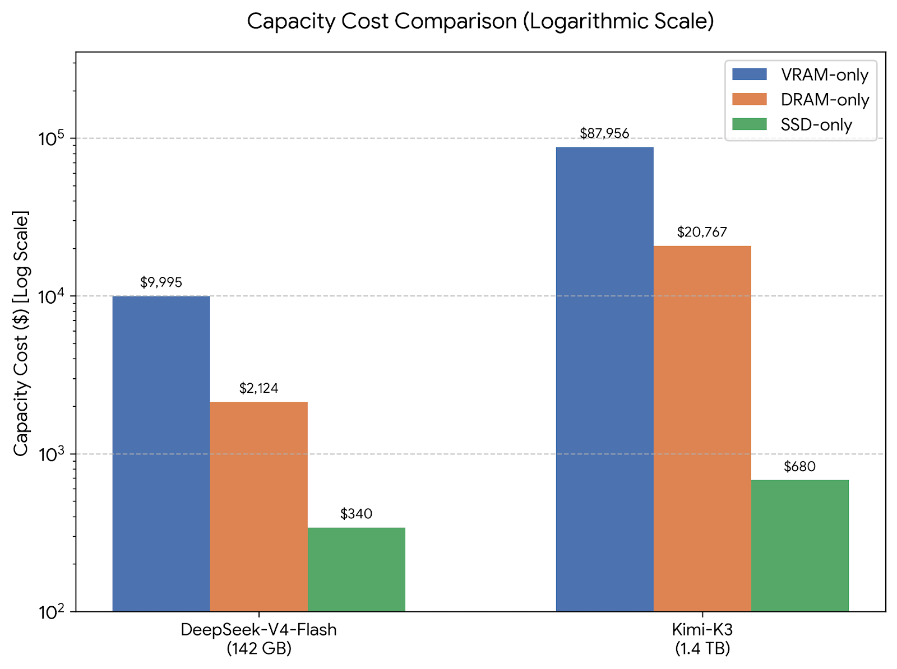
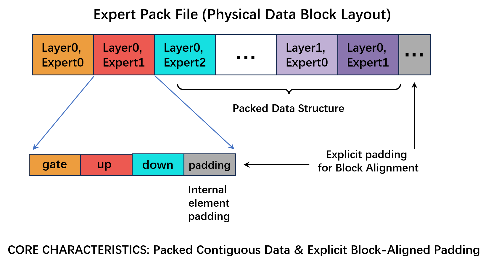
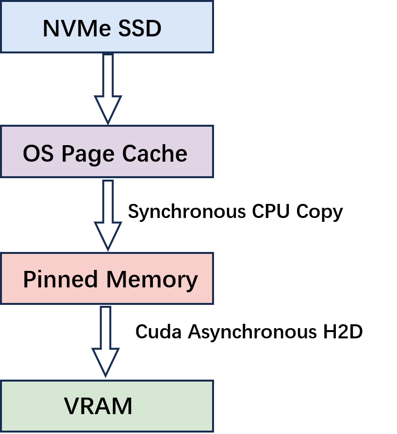
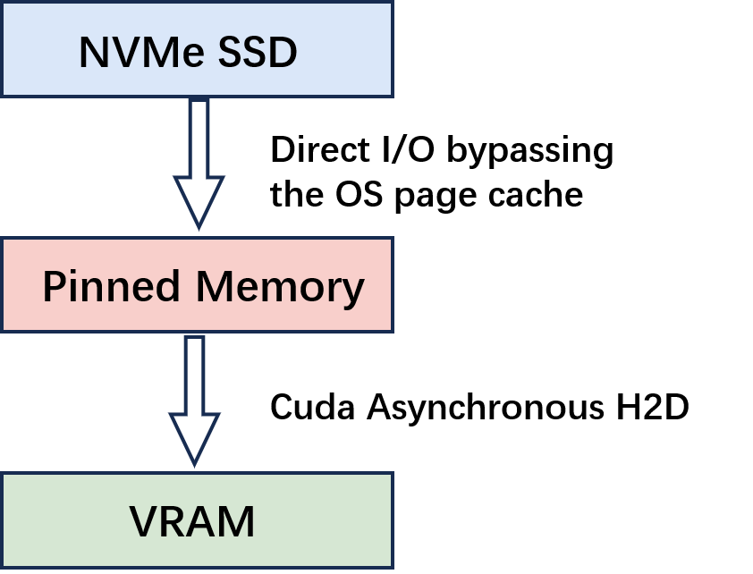
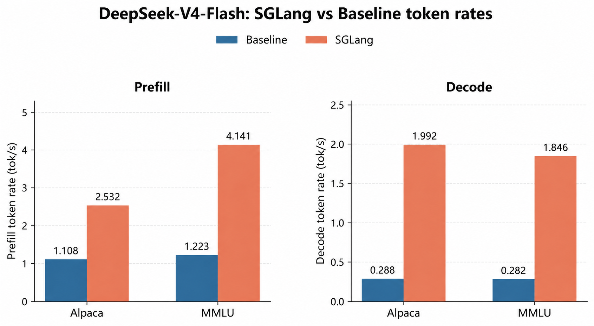
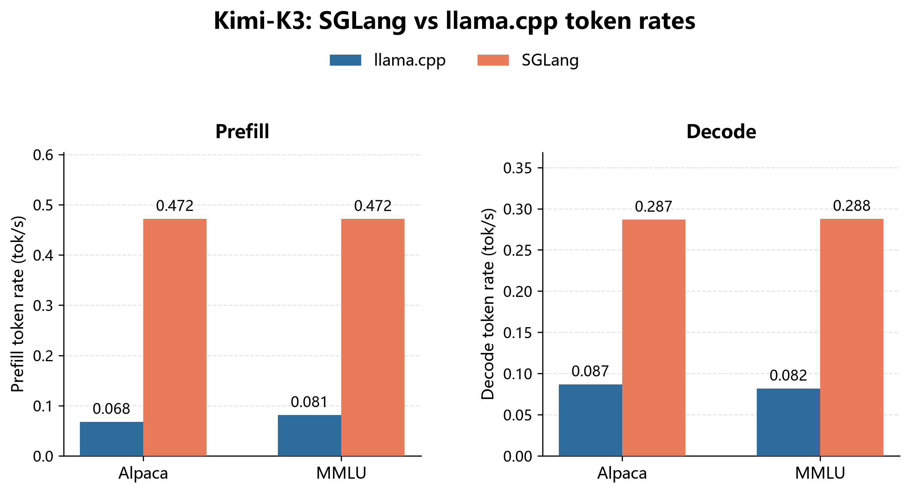
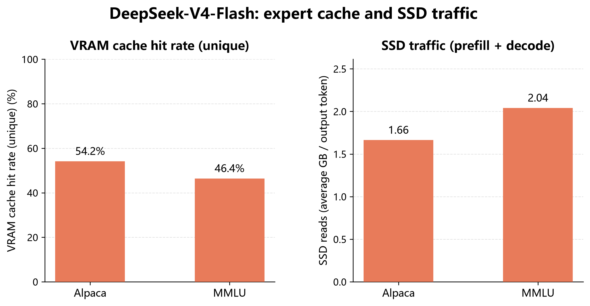
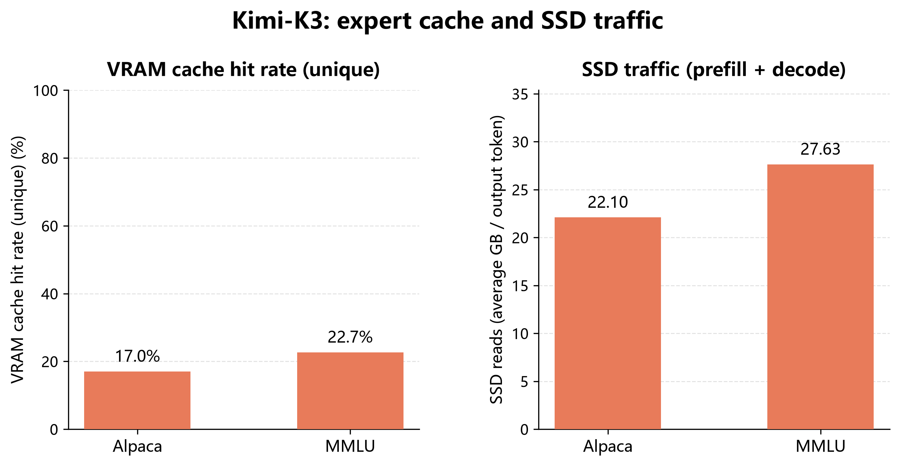

一张32GB显存的RTX 5090、一颗Intel Ultra5 230F、32GB内存，再加一块2TB的消费级NVMe SSD，就能跑起DeepSeek-V4-Flash和Kimi-K3。这两个模型的总参数容量远超单卡显存，常规部署需要多张GPU，或者几百GB乃至TB级的主机内存。
SGLang的SSD Expert Pack把显存问题换成了存储问题：路由专家权重全部留在NVMe SSD上，路由器为每个token只激活一小部分专家，运行时因此只搬运那些尚未缓存在GPU上的被选中专家。
这条路改变的是权重的存储与交付方式，不是模型计算本身。它不剪枝、不替换、不合并，也不跳过任何被选中的专家，Expert Top-K保持不变。真正的关键有三处：把权重按专家重新布局成可直接寻址的连续块、用直接I/O去掉page cache到pinned memory的那次拷贝、用按字节预算的GPU缓存留住复用率最高的工作集。
DeepSeek-V4-Flash和Kimi-K3的总参数容量远超单张消费级GPU的显存。常规部署因此需要多张GPU，或者几百GB乃至TB级的主机内存。这个容量门槛，把前沿模型的能力和本地硬件隔开了一道很高的墙。
SGLang的SSD-backed Expert Pack路径换了个思路。路由专家权重留在NVMe SSD上。路由器为每个token只激活一小部分专家，运行时因此只搬运那些还没在当前GPU缓存里的被选中专家。Expert Pack把每一对「层/专家」的权重重新组织成一个可直接寻址的连续专家块。运行时用直接I/O把这个专家块读进一块对齐的pinned主机缓冲，再异步传进GPU缓存。
这条路改变的是模型权重的存储与交付方式，不是模型计算。它不剪枝、不替换、不合并，也不跳过被选中的专家，Expert Top-K也不降低。结果就是：用一颗Intel Ultra5 230F CPU、32GB内存、一块TiPro9000 2TB盘和一张32GB显存的RTX 5090，可以实际跑起DeepSeek-V4-Flash和已验证的纯文本Kimi-K3路径。
混合专家（Mixture-of-Experts）模型把前馈网络拆成许多专家。路由器为一个token给专家打分之后，只有一小部分专家参与这个token的计算，其余专家在该token上处于空闲状态。
而路由器的选择会随token和提示词变化，所以即使任一时刻只有很小的工作集是活跃的，完整的专家池也必须随时可用。量化能缩小产物体积，但消不掉存放专家池的需求。MoE推理因此同时具有两个性质：
● 每个token的计算是稀疏的；
● 需要存放和交付的专家总容量很大。
这正是SSD作为后备层的价值所在。它提供的容量远超消费级显存或内存，而现代PCIe 5.0 NVMe SSD的带宽，足以支撑一条精心设计的交付路径。只有当布局、读取路径和缓存策略都与专家级访问模式匹配时，SSD的容量才会真正变成可执行的模型内存。
一张容量与成本的对比可以把这笔取舍讲清楚。下面这些数字只是容量的下界，不是整机价格。

这张图并不意味着SSD和DRAM的延迟一样，也不意味着只买一块SSD就能跑模型。它说明的是：把完整专家池放进显存或内存很快就会变得不现实，而用SSD承担容量、再给活跃工作集配一块有上限的GPU缓存，可以大幅拉低硬件门槛。
SSD-LLaMA的核心思想，是把SSD、内存和显存当作一套由运行时控制的存储层级来管理。完整专家池留在高容量层，有限的显存则保留观测到复用率最高的那些专家。
SGLang的Expert Pack把这套思想里最关键的、以专家为中心的部分，落到了SGLang的MoE运行时里：
● Expert Pack让每一对「层/专家」成为可独立寻址的连续专家块。
● O_DIRECT与对齐的pinned缓冲去掉了额外的一次page cache中转拷贝。
● 按字节预算的LFU/LRU GPU缓存，保留那些会被复用的完整专家。
当前的SGLang实现并不声称复刻SSD-LLaMA论文里的每一个机制。SGLang的实现是以GPU为中心的：pinned主机内存是一块有上限的传输中转区，不是常驻的主机专家缓存；当前特性也不需要论文里的CPU专家执行或无损CUDA解压。把这条边界讲清楚，功能范围才是精确的。
在原始的GGUF或多分片张量布局下，同一个专家的gate、up、down权重可能位于文件的不同区域。一次路由命中因此会触发多次小读取、张量名查找和中转操作。
显式的按需读取避免了投机预取，但会把SSD与H2D的完整延迟暴露在当前MoE层的关键路径上。路由器出结果之后，GPU必须等待被选中的专家。预取能掩盖一部分延迟，但有两个根本限制：
● 正确的专家仍可能到得太晚，因为路由结果要等上一步计算结束才知道；
● 预测错误会消耗SSD带宽、中转空间和GPU缓存容量，而真正被选中的专家之后仍然要读。
所以SGLang的做法是先改变专家在物理上的布局，再压低每一次不可避免的缓存未命中的代价。
原生GGUF是面向张量的模型容器，不是面向专家的直接I/O存储。它的元数据和张量负载都按单个张量组织，而同一个专家的gate、up、down权重可能被分散在文件的不同区域甚至不同分片里。原始加载路径通常使用解析器、mmap或带缓冲的文件读取，应用程序看到的是可分页的、由page cache支撑的映射，而不是一块预分配的、对齐的DMA目标缓冲。
O_DIRECT要求下面这些全部由调用方控制：
● 与存储和文件系统约定一致的文件偏移；
● 与该约定一致的读取长度；
● 由用户提供、地址同样对齐且适合该次读取的缓冲。
原生GGUF文件里任意一段张量切片都提供不了这种专家级约定。它的偏移可能没对齐，长度可能不是所需块大小的整数倍，一个专家需要的三个张量也不保证构成一段连续区间。调用方当然可以自己发多次带填充的对齐读取，再把专家拼装到另一块缓冲里，但那样就丢掉了最主要的收益：重新引入多次读取和额外的拼装工作，同时原来的mmap/page cache路径依旧不能把page cache页面本身当作O_DIRECT的目标缓冲。
Expert Pack就是让直接I/O变得可用的那个离线变换。它把一对「层/专家」的所有角色放进一个带填充、对齐的专家块，在清单里记录精确的偏移和长度，并提供一块地址满足同一约定的pinned缓冲。运行时因此可以完整地读取并传输一个专家，而不需要让原生GGUF布局去扮演直接I/O布局。
SGLang Expert Pack v1把一对 (layer, expert) 当作一个完整专家。一个DeepSeek专家包含gate、up、down三个角色。清单记录每个角色的张量边界、格式、完整性信息和pack偏移。
逻辑布局如下：

运行时不会去扫描文件找张量名，而是从pack元数据推导专家偏移：
expert_offset = data_start
+ (layer * num_experts + expert) * expert_stride专家块内部各角色的偏移同样会被校验。于是一次清单查找就能解析出完整的专家读取区间。运行时可以按read_splits把这个区间切成数量有界的并行任务。
这套布局改变的是权重在SSD上的物理组织，不是张量内容、量化格式、路由决策或模型数学。Kimi-K3使用一个独立的GGML Expert Pack适配器，当前验证过的输入是38个Q2_K GGUF分片，其路由专家的gate/up用Q2_K、down用Q3_K。
直接I/O不能像普通read() 那样接受任意的文件偏移、长度和用户缓冲。SGLang运行时会校验：
● 每个专家的Expert Pack偏移；
● 每个读取区间的起点与长度；
● 每块pinned中转缓冲的地址。
当前实现检查4096字节对齐。如果pack或中转缓冲不满足这个约定，初始化就会失败，而不是在推理过程中悄悄退回到一条不受控的路径。
这是Expert Pack与传统文件读取路径之间最重要的差别之一。
传统的文件读取通常要经过操作系统page cache：

page cache是内核管理的文件缓存，它和CUDA可用于异步H2D的page-locked用户内存不是一回事。要发起异步H2D传输，应用程序通常得先准备一块pinned缓冲。文件数据因此必须先从这个page cache拷进那块pinned缓冲，GPU传输才能开始。从应用程序的角度看，这次page cache到pinned的交接是一次同步的CPU内存拷贝：主机侧的中转步骤必须先完成，H2D操作才有一块有效的pinned源缓冲。它本身不是一次cudaMemcpyAsync。
它既不是SSD读取，也不是H2D传输，而是CPU在主机侧多做的一次同步内存拷贝：从page cache支撑的内存里读负载，再写进一块pinned中转缓冲。对一个较大的专家来说，这等于按专家全尺寸做一次读加一次写，消耗主机内存带宽，并在GPU传输开始之前多引入一次内核态到用户态的中转交接。
当direct_io=True时，SGLang用O_DIRECT打开Expert Pack，并把读取目标设为一块预分配的、对齐的pinned中转缓冲：

读取目标本来就是CUDA需要的那块pinned缓冲，所以下面这个中间步骤被消掉了：
page cache -> pinned memory这不是把那次拷贝做得更快，而是把这次拷贝从数据路径上整个去掉。一个简化的成本模型是：
Traditional path:
T = T(SSD -> page cache)
+ T(page cache -> pinned)
+ T(pinned -> GPU)
+ T(sync)
Expert Pack direct I/O:
T = T(SSD -> pinned)
+ T(pinned -> GPU)O_DIRECT不会让SSD的物理带宽变大。它做的是从端到端路径上减去一次完整的主机内存遍历，由此带来这些好处：
● 少一次主机内存读和写，降低CPU与内存带宽压力；
● 少一次内核page cache与用户态中转之间的同步交接；
● 大块专家负载不再污染page cache、去和无关数据抢空间；
● 读完的专家块可以不经page cache中转拷贝直接进入H2D路径；
● 同一套专家级约定在每一对「层/专家」上复用。
page cache拷贝这条结论只在direct_io=True时成立。当前的SGLang Expert Pack加载器以及DeepSeek/Kimi的5090启动脚本默认开启该选项。如果显式关掉直接I/O，路径会重新经过page cache和多一次中转拷贝。
GPU缓存是把重复的专家访问变成显存命中的机制。Expert Pack不缓存单个张量碎片：一个缓存条目装的是一对 (layer, expert) 完整的gate/up/down数据。让完整专家待在一起很重要，因为被选中的专家计算时三个角色都要用。只缓存其中一个角色的话，其余角色仍然要读，未命中的代价并没有被消掉。
缓存按字节预算而不是按专家数量预算。不同模型和适配器每个专家的负载大小不同，运行时因此从可用的显存预算推导槽位数量：
usable_vram = min(requested_cache, free_vram - reserve)
slot_count = floor(usable_vram / expert_payload_bytes)预留量保护模型本身、CUDA运行时、激活值以及其他非缓存分配所需的内存。如果算出来的槽位数装不下一个完整的top-k工作集，初始化就会失败。这让缓存约定变得显式：缓存预算不许占用当前MoE计算所必需的内存。
命中时，运行时复用常驻的专家，既不读Expert Pack也不为该专家发起H2D。如果上一次传输还在进行，一个CUDA event会保证消费方不会看到只装入一半的槽位。未命中时，运行时挑一个牺牲槽位，把完整专家读进可复用的pinned中转缓冲，再拷进GPU槽位，并且只在传输event就绪之后才发布该槽位。
替换策略同时考虑频率和新近度。运行时记录每一对 (layer, expert) 被选中的频次以及最后一次被使用的时间。高频专家比冷专家更难被驱逐；在有用程度相近的条目之间，更老的条目是更好的牺牲品。当前top-k请求里的活跃专家受保护不被驱逐，缓存因此不会把自己马上要执行的工作集换出去。
源端的Expert Pack是不可变的，所以驱逐一个GPU条目不需要写回：专家总能根据记录的SSD偏移重建。这让显存缓存管理比脏数据缓存简单，也让替换策略只关注复用价值而不是持久性。
运行时暴露了一组计数器，让缓存行为可度量：
● cache_hits与cache_misses；
● cache_evictions；
● pack_read_bytes；
● h2d_bytes；
● fallback_count与io_errors。
这些计数器能把缓存问题和I/O问题区分开。命中率低意味着显存预算或负载局部性不足；命中率良好但pack_read_bytes与h2d_bytes很高，可能说明在某个阶段活跃集比缓存大。io_errors报告观测到的I/O失败，而fallback_count是诊断性遥测，其含义取决于被插桩的回退路径；两者都不是缓存性能指标。
当前的执行顺序把专家缓存未命中放在了它所服务的MoE计算的关键路径上。acquire() 把路由ID拷回CPU，等待SSD读取的future，入队专家级H2D传输，并让当前CUDA流等待这些传输event。只有这些event就绪之后，apply() 才启动MoE内核。不同缺失专家的读取与传输可以在交付阶段重叠，但当前路径不会把这段交付与消费这些专家的MoE计算重叠起来。
因此当前路径的一个简化单步模型是：
T_step ~= T(miss delivery) + T(GPU compute)这里的T(miss delivery) 包含路由ID准备、SSD读取、中转、H2D提交，以及让被选中专家可用所需的等待。GPU缓存命中时，SSD读取与H2D这两部分可以跳过。跨步骤的流水线能改变这个模型，但那不属于这里描述的执行路径。实际结果取决于SSD带宽、访问分布、缓存命中率、中转槽位数量和专家形状。
我们在一台消费级机器上用SGLang的SSD Expert Pack路径评测了DeepSeek-V4-Flash和Kimi-K3：Intel Ultra5 230F CPU、32GB内存、一块TiPro9000 2TB盘，以及一张32GB显存的RTX 5090。这个负载代表的是端点式推理，而不是批量服务：十个固定请求逐个发送，上一个请求结束后才发下一个。
测试集包含五个Alpaca请求和五个MMLU请求。两组对比都使用相同的提示词顺序、temperature 0、默认EOS处理和200 token的生成目标。结果部分报告平均预填充与解码速率，以及SGLang的缓存命中率和SSD流量。确切的版本、文件准备过程和启动命令记录在结果之后。
Expert Pack通过 --load-format expert_pack显式选择；常规的auto、safetensors和gguf加载路径不受影响。DeepSeek-V4-Flash与Kimi-K3的详细复现流程见第9节。
Expert Pack是权重布局与交付层面的优化，不是近似推理算法。它的正确性约定是：
● 路由器选中的每个专家都会被执行；
● Expert Top-K不变；
● 被选中的专家不会被另一个常驻专家顶替；
● 被选中的专家不会被剪枝、跳过或合并；
● pack与清单按配置完成结构、维度和密码学校验；
● fallback_count与io_errors会被上报，而不是把I/O失败悄悄藏起来。
验证显示，DeepSeek-V4-Flash在多个提示词类别上给出了与Ollama语义等价的回答。Kimi-K3与SGLang的200 token参考输出一致；全部92个路由层都以Top-16专家执行，io_errors=0。fallback_count作为诊断遥测保留，但当前路径并不会为每一种假想的回退都提供插桩自增，所以零值不作为独立的正确性证据。正确性由路由与输出审计、以及pack结构校验来确立。
所有SGLang、Ollama和llama.cpp的测量都使用第9节记录的测试环境与版本。这些图描述的是该硬件条件下的验证结果，token数与各运行时自身的软件设置保持各对比中所述的配置。早先的汇总表已退役，下面的图现在是token速率对比的正式呈现。
验证过的权重文件与生成的Expert Pack占用如下：
这些是验证过的权重负载的文件大小。pack索引、锁、清单和其他元数据另计。
| 模型 | 原始权重文件 | 权重体积 | Expert Pack体积 |
|---|---|---|---|
| DeepSeek-V4-Flash | 一个Ollama MXFP4 GGUF blob | 155.10 GB | 147.18 GB |
| Kimi-K3 | 38个Q2_K GGUF分片 | 1009.51 GB（约1.01 TB） | 985.61 GB |
这组对比使用十个共享请求：五个Alpaca和五个MMLU。两个运行时每个请求最多生成200个token。图中报告每个数据集上平均的预填充与解码token速率。

相对基线，SGLang在Alpaca上把预填充提升2.28倍、MMLU上3.39倍；解码分别提升6.92倍和6.55倍。
各数据集的底层均值紧凑列在下表。速率单位是token/秒，均为该数据集五条记录的算术平均。
| 数据集 | 基线预填充 | SGLang预填充 | 预填充提升 | 基线解码 | SGLang解码 | 解码提升 |
|---|---|---|---|---|---|---|
| Alpaca (n=5) | 1.108 | 2.532 | 2.28x | 0.288 | 1.992 | 6.92x |
| MMLU (n=5) | 1.223 | 4.141 | 3.39x | 0.282 | 1.846 | 6.55x |
这组对比在两个运行时上使用相同的十个固定请求：五个Alpaca和五个MMLU。两个客户端都用temperature 0和默认EOS处理；每个请求正好生成200个补全token，因此解码对比在提示词集合、停止行为与输出长度上都已对齐。图中报告每个数据集上平均的预填充与解码token速率。

相对llama.cpp，SGLang在Alpaca上把预填充提升6.96倍、MMLU上5.80倍；解码分别提升3.30倍和3.52倍。十请求的汇总使用第9节描述的十条有效请求记录。
token速率要结合缓存遥测一起看。下面这些用Python生成的柱状图报告唯一键的显存缓存命中率，以及每生成一个token的平均SSD流量。cache_hits与cache_misses统计的是acquire() 在每次更新内对key去重后的唯一 (layer, expert) 键数量，不是逐token的路由边访问数。一次缓存命中会免掉该专家的SSD读取与H2D传输。SSD流量指标是各请求pack_read_bytes总量（含预填充与解码）的无权重均值，再按生成的补全token数归一化，因此并不是仅解码的流量。两张图都只展示SGLang自身的遥测，所以单一序列由周边文字标注，而不是图例。

DeepSeek使用完整的十请求运行：五个Alpaca与五个MMLU，每个补全200 token。唯一键显存缓存命中率Alpaca为54.2%，MMLU为46.4%。含预填充与解码的平均SSD流量分别为每个生成token 1.66 GB和2.04 GB（十进制）。

Kimi图使用全部十个完成的请求：五个Alpaca与五个MMLU，每个补全200 token。各请求唯一键显存命中率的无权重平均分别是17.0% 和22.7%。对应的平均SSD流量（含预填充与解码）为每个生成token 22.10 GB和27.63 GB（十进制）。与DeepSeek的差异在预期之内：Kimi的配置为GPU专家缓存预留5 GiB，而DeepSeek那组预留约21 GiB，两个适配器的专家负载大小与路由行为也不同。
这些提升并不来自某一个孤立的更快拷贝原语。它是几种效果的叠加：
● Expert Pack把散落的张量访问变成可寻址的连续专家读取；
● 直接I/O去掉了page cache到pinned memory的拷贝；
● pinned中转提供了一块CUDA兼容的主机源，让专家级H2D不必再经page cache中转；
● GPU缓存命中时跳过SSD读取和H2D传输。
这一节给出结果表之后的完整复现流程。两个子节使用相同的十个固定请求。它们是端点式测试：客户端按顺序发送十个HTTP请求，等每个响应回来再发下一个，并发为1，不使用批请求。
这十个请求是五个Alpaca样本和五个MMLU样本，顺序如下：
每个请求使用temperature 0、默认EOS处理和200 token目标。客户端记录每个请求的提示词token数、补全token数、TTFT/预填充耗时和解码耗时。第8节的表报告各数据集五条请求的算术平均。
| # | 样本ID | 数据集 | 提示词 |
|---|---|---|---|
| 1 | alpaca-37246 | Alpaca | Summarize the movie “Toy Story” |
| 2 | mmlu-abstract_algebra-14 | MMLU | Answer the multiple-choice question. Select the correct option and briefly explain your answer. Question: Find the maximum possible order for an element of S_n for n = 10. A. 6 B. 12 C. 30 D. 105 |
| 3 | alpaca-50812 | Alpaca | Given a list of items, suggest an interesting activity. Input: pencils, paper, markers |
| 4 | mmlu-moral_disputes-8315 | MMLU | Answer the multiple-choice question. Select the correct option and briefly explain your answer. Question: According to Hardin, the “ratchet effect” refers to the fact that A. overpopulation does not affect the number of people who are poor. B. overpopulation leads to creation of food banks that help curb poverty rates. C. world hunger and poverty leads to recognition of rights not to be hungry. D. the use of a world food bank to feed the hungry leads to an escalating series of emergency situations. |
| 5 | alpaca-9907 | Alpaca | Translate this phrase from Spanish to English: El sol no brilla hoy. |
| 6 | mmlu-high_school_macroeconomics-3940 | MMLU | Answer the multiple-choice question. Select the correct option and briefly explain your answer. Question: The crowding-out effect from government borrowing is best described as A. the rightward shift in AD in response to the decreasing interest rates from contractionary fiscal policy. B. the leftward shift in AD in response to the rising interest rates from expansionary fiscal policy. C. the effect of the President increasing the money supply which decreases real interest rates and increases AD. D. the effect on the economy of hearing the chairperson of the central bank say that he or she believes that the economy is in a recession. |
| 7 | alpaca-40699 | Alpaca | Give an example of a bias that could exist in an AI algorithm. |
| 8 | mmlu-professional_law-10971 | MMLU | Answer the multiple-choice question. Select the correct option and briefly explain your answer. Question: Homeowner owns a property in its natural condition with a house on it. There was no fill of any kind on the property. Neighbor, who owns the adjacent property to the East, built a driveway whose western boundary is along the border of homeowner's property. The excavator dug the driveway five feet deep. The land began to subside along the line of excavation and about three feet of homeowner's land fell off into the driveway, making that part of her property useless. Homeowner demanded that neighbor fill in the property to buttress the erosion created. That was not done and the erosion continued to occur. Homeowner sued and asked for an injunction compelling the neighbor to build and maintain a retaining wall. Will the court rule for the plaintiff/homeowner? A. Yes, because excavation is an abnormally dangerous activity and neighbor is absolutely liable for any damages caused by the violation. B. Yes, because every landowner has a right to the lateral support of the soil in its natural state. C. No, because the neighbor did not go onto the adjacent land and confined all excavation to his own land. D. No, the right to lateral support is a common law right that has been abrogated by statute in virtually all states so that the right no longer exists. |
| 9 | alpaca-34440 | Alpaca | Make a menu item for a restaurant that contains the following ingredients. Input: Salmon, avocado, spinach |
| 10 | mmlu-jurisprudence-6660 | MMLU | Answer the multiple-choice question. Select the correct option and briefly explain your answer. Question: Which of the following is the strongest argument against ethical relativism's hostility to human rights? A. Utilitarianism B. Communitarianism. C. Cognitivism. D. Positivism. |
版本与负载
SGLang这一侧使用分支support_deepseek-v4_and_kimi-k3_on_ssd上的提交81c9f837f19ff8dfe1a9fcd1abfc6069dd28d2ec。基线使用Ollama 0.33.1及其托管的llama.cpp runner，提交d222767c7。两侧都以相同采样设置串行执行上面十个请求，一次一个。
启动Ollama基线服务
在拉取模型和发送请求之前，先启动Ollama服务：
OLLAMA_HOST=127.0.0.1:11435 ollama serve >/tmp/deepseek-ollama.log 2>&1 &准备
基线服务运行起来之后，从Ollama模型页拉取已验证的DeepSeek-V4-Flash MXFP4 GGUF blob，并用ollama show --modelfile取得它的本地文件路径。对应的模型卡是Hugging Face上的DeepSeek-V4-Flash-0731：
ollama pull frob/deepseek-v4-flash-0731
ollama show --modelfile frob/deepseek-v4-flash-0731记录的blob SHA-256是947ac34c08c0e5c5752ac76398f934b3b6b4075cfe915ba43dd5ac754900a4cd，Ollama清单的SHA-256是882b1398c0ca4e7ec8ca0a501fd8c4372f780f690536a3ec17ffc75306569ed3。
安装SGLang检出并手动构建DeepSeek Expert Pack。为 --model-config准备一份匹配的DeepSeek模型配置JSON：
cd /path/to/sglang-latest-deepseek-v4-kimi-k3-ssd
python3 -m pip install -e 'python'
python3 tools/expert_pack/prepare_deepseek_pack.py \
--gguf /path/to/deepseek-v4-flash-0731.gguf \
--model-config /path/to/deepseek-v4-flash-config.json \
--safety-margin-gib 16这会在源GGUF旁边创建或复用DeepSeek-V4-Flash.expert-pack及其DeepSeek-V4-Flash.expert-pack.manifest.json。
校验生成的pack，并创建服务端需要的元数据。这条命令不启动服务；因为上一步已经构建过pack，校验阶段会复用它而不是重新构建：
python3 examples/runtime/deepseek_v4/benchmark_deepseek_5090.py \
--gguf /path/to/deepseek-v4-flash-0731.gguf \
--validate-only生成的元数据文件存放在 ${XDG_CACHE_HOME:-$HOME/.cache}/sglang-expert-pack/deepseek-v4-flash/
这里的
启动SGLang
下面这条就是直接使用Expert Pack的服务端启动命令。其中的哈希值在启动前从生成的清单里读出。
GGUF=/path/to/deepseek-v4-flash-0731.gguf
ARTIFACT_DIR=${XDG_CACHE_HOME:-$HOME/.cache}/sglang-expert-pack/deepseek-v4-flash/<fingerprint>
MODEL_META="$ARTIFACT_DIR/model-meta"
PACK_PATH="$(dirname "$GGUF")/DeepSeek-V4-Flash.expert-pack"
MANIFEST_PATH="$(dirname "$GGUF")/DeepSeek-V4-Flash.expert-pack.manifest.json"
STATS_PATH="$ARTIFACT_DIR/deepseek-v4-expert-pack.stats.json"
SOURCE_SHA256="$(jq -r '.source.sha256' "$MANIFEST_PATH")"
OLLAMA_MANIFEST_SHA256="$(jq -r '.model.model_identity_sha256 // .model.ollama_manifest_sha256' "$MANIFEST_PATH")"
CONFIG_SHA256="$(jq -r '.model.config_sha256' "$MANIFEST_PATH")"
python3 -m sglang.launch_server \
--model-path "$MODEL_META" \
--tokenizer-path "$MODEL_META" \
--trust-remote-code \
--load-format expert_pack \
--model-loader-extra-config "{\"pack_path\":\"$PACK_PATH\",\"manifest_path\":\"$MANIFEST_PATH\",\"source_path\":\"$GGUF\",\"source_sha256\":\"$SOURCE_SHA256\",\"ollama_manifest_sha256\":\"$OLLAMA_MANIFEST_SHA256\",\"config_sha256\":\"$CONFIG_SHA256\",\"cache_vram_mib\":21504,\"cache_vram_reserve_mib\":2048,\"stage_slots\":12,\"read_splits\":4,\"direct_io\":true,\"stats_flush_interval\":43,\"stats_path\":\"$STATS_PATH\"}" \
--attention-backend dsv4 \
--tp-size 1 --ep-size 1 \
--disable-cuda-graph --disable-flashinfer-autotune \
--disable-shared-experts-fusion --skip-server-warmup \
--max-running-requests 1 --mem-fraction-static 0.96 \
--watchdog-timeout 1800 --host 127.0.0.1 --port 30001把同样的十行发给运行中的Ollama /api/generate端点。保留的客户端使用num_predict=200、temperature=0、固定种子，并且一次只发一个请求；它写出每个请求的JSONL记录以及结果表所用的汇总。
版本与负载
SGLang这一侧使用同一个提交81c9f837f19ff8dfe1a9fcd1abfc6069dd28d2ec。基线使用llama.cpp提交5fff128451d7603857597ee1fc18ac1dfb90f148。上面十个Alpaca/MMLU请求在两个运行时上都是串行发送，一次一个，temperature 0、默认EOS处理、200 token目标。
准备
从Blackfrost-AI/KIMI-K3-Q2_K-GGUF-ABLITERATED下载38个纯文本Q2_K GGUF分片：
hf download Blackfrost-AI/KIMI-K3-Q2_K-GGUF-ABLITERATED \
--include "KIMI-K3-MXP4-DERISKED-Q2_K-*.gguf" \
--local-dir /path/to/kimi-k3按记录的版本从moonshotai/Kimi-K3下载分词器与配置文件：
hf download moonshotai/Kimi-K3 \
config.json tokenizer_config.json generation_config.json \
tokenization_kimi.py encoding_k3.py tiktoken.model \
--revision 9f62e4e9fffbd0a83ddd60e1c209d828994b3569 \
--local-dir /path/to/kimi-k3-tokenizer手动构建Kimi Expert Pack。--gguf指向第一个编号分片，脚本会自动发现该目录下的全部38个分片。Kimi模型配置就是下载来的、含text_config的config.json：
cd /path/to/sglang-latest-deepseek-v4-kimi-k3-ssd
python3 tools/expert_pack/prepare_kimi_pack.py \
--gguf /path/to/kimi-k3/KIMI-K3-MXP4-DERISKED-Q2_K-00001-of-00038.gguf \
--model-config /path/to/kimi-k3-tokenizer/config.json \
--safety-margin-gib 2这会在GGUF分片旁边创建KIMI-K3-MXP4-DERISKED-Q2_K.expert-major.pack。它是一个独立的GGML Expert Pack；已验证的路由专家gate/up用Q2_K、down用Q3_K。
创建SGLang需要的模型元数据与清单。这个准备模式不启动服务：
python3 examples/runtime/kimi_k3/benchmark_kimi_k3_5090.py \
--gguf /path/to/kimi-k3/KIMI-K3-MXP4-DERISKED-Q2_K-00001-of-00038.gguf \
--max-new-tokens 200 --direct-io --read-splits 1 --prepare-only它会在 ${XDG_CACHE_HOME:-$HOME/.cache}/sglang-expert-pack/kimi-k3/
启动SGLang
GGUF_DIR=/path/to/kimi-k3
PACK_PATH="$GGUF_DIR/KIMI-K3-MXP4-DERISKED-Q2_K.expert-major.pack"
ARTIFACT_DIR="${XDG_CACHE_HOME:-$HOME/.cache}/sglang-expert-pack/kimi-k3/<fingerprint>"
MODEL_META="$ARTIFACT_DIR/model-meta"
MANIFEST_PATH="$ARTIFACT_DIR/kimi-k3-expert-pack.manifest.json"
STATS_PATH="$ARTIFACT_DIR/kimi-k3-expert-pack.stats.json"
python3 -m sglang.launch_server \
--model-path "$MODEL_META" \
--tokenizer-path "$MODEL_META" \
--trust-remote-code \
--load-format expert_pack \
--model-loader-extra-config "{\"pack_path\":\"$PACK_PATH\",\"manifest_path\":\"$MANIFEST_PATH\",\"cache_vram_mib\":5120,\"cache_vram_reserve_mib\":1536,\"stage_slots\":16,\"read_splits\":1,\"direct_io\":true,\"stats_flush_interval\":92,\"stats_path\":\"$STATS_PATH\",\"verify_pack_sha256\":false}" \
--tp-size 1 --ep-size 1 \
--disable-cuda-graph --disable-shared-experts-fusion \
--disable-radix-cache --mamba-radix-cache-strategy no_buffer \
--disable-overlap-schedule --skip-server-warmup \
--chunked-prefill-size 64 --watchdog-timeout 1800 \
--max-running-requests 1 --mem-fraction-static 0.98 \
--host 127.0.0.1 --port 30001启动llama.cpp基线服务
用CPU专家执行的方式启动固定版本的llama.cpp构建：
/path/to/llama.cpp/build/bin/llama-server \
-m /path/to/kimi-k3/KIMI-K3-MXP4-DERISKED-Q2_K-00001-of-00038.gguf \
-ngl -1 --cpu-moe --host 127.0.0.1 --port 8081 \
-t 16 -tb 16 --threads-http 16 -np 1 -c 4096 \
--no-warmup --metrics \
--log-file /path/to/kimi-k3-llama-cpp/server.logllama.cpp客户端把同样的十个提示词发给 /completion，一次一个，使用cache_prompt=false、temperature=0和n_predict=200。
SSD容量与准备时间
Expert Pack需要额外的SSD容量。PR记录构建DeepSeek-V4-Flash pack约需5到10分钟，首次可运行约需8到15分钟。Kimi-K3的pack构建在保留的测量中耗时29分42秒，首次就绪约35到45分钟。38个Kimi源分片与生成的Expert Pack合计约1.814 TiB；测量使用的是一块TiPro9000 2TB盘，而实际部署建议留出余量、使用4TB SSD。
直接I/O
O_DIRECT需要平台支持，并要求文件偏移、读取长度和用户缓冲地址都对齐。SGLang在运行时初始化阶段采取失败即停的策略。如果平台不支持直接I/O，或者pack不满足对齐约定，那就不应该把结果描述为直接I/O的性能。
缓存与负载
● GPU缓存越小，未命中越多，SSD读取与H2D传输就会更频繁地落在关键路径上。
● 提示词或负载分布的变化会改变热点专家，所以某个请求的热集并不保证适配所有负载。
● 如果完整专家池本来就装得进GPU显存，Expert Pack只会多出一条不必要的数据路径，不是合适的部署模式。
● 如果负载由GPU计算主导，去掉主机内拷贝带来的收益可能被计算时间掩盖。
● 如果SSD的随机读行为、排队或热稳定性不佳，加大read_splits和中转槽位可能带来排队与内存压力，而不是吞吐提升。
当前功能边界
这个特性聚焦于路由专家的SSD交付与GPU缓存。它不提供SSD KV缓存卸载，也不改变请求调度。它是一条需要显式开启的Expert Pack路径，不是对SGLang所有模型加载格式的全局替换。
SSD Expert Pack不是简单地用更慢的盘替代GPU显存。它围绕MoE推理的稀疏访问模式重新设计了权重交付：
router selects a small set of experts
-> Expert Pack resolves their offsets
-> O_DIRECT reads into aligned pinned buffers
-> expert-level asynchronous H2D fills the GPU cache
-> the complete expert becomes available for computation去掉page cache到pinned memory的那次拷贝是一个容易被忽略的细节，但它是一处具体的端到端优化。传统路径先读到操作系统page cache，再把负载拷进CUDA可用的pinned内存。有了直接I/O，Expert Pack直接把预分配的pinned缓冲当作读取目标，整段主机内存搬运和同步交接就此消失。
SGLang正是这样把SSD-LLaMA的核心思想落到真实的DeepSeek-V4-Flash与Kimi-K3集成上：完整专家池留在高容量SSD，有上限的GPU缓存保留当前工作集，运行时只搬运路由器选中的那些专家。超大MoE模型不再需要堆足够的显存或内存来装下整个模型，而是可以跑在一张消费级GPU加一块高速NVMe SSD上。
参考：https://www.lmsys.org/blog/2026-08-29-sglang-ssd-expert-pack/